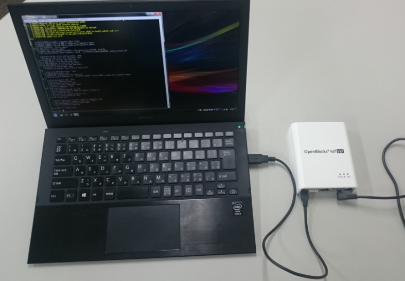

ご利用の前に¶
製品概要¶
OpenBlocksシリーズはOSとしてDebian GNU/Linuxを採用した汎用サーバー製品です。ハードウェア特性を活かす為のカスタマイズを行っていますが、本カスタマイズ以外は、Debianやその他Linuxの一般的な操作方法でご利用いただけます。
SSDベースのシステム開発における注意点¶
近年、フラッシュメモリーのコストダウンによってスマートフォンを始めノートPCや様々な機器では、従来のハードディスクに代わってSSDが採用されています。また、本製品に使用されているeMMCはSSDの一種です。
SSDはランダムアクセス性能が高速であり、かつ、ソリッドステートである利点からメカニカルな障害耐性や環境性能が非常に良くなりますが、その反面、ハードディスクに比べてデータの書き換え制限が大幅に少なくなります。
SSDには大きく分けるとSLCとMLCにわかれ、書き換え性能が数万回のSLCタイプが数ギガの容量帯では主流でしたが、マルチビットセルで書き換え回数数千回の低コストのMLCが大容量化を実現し、スマートフォンやPCに多く使われるようになり、現在ではSLCのSSDは徐々に姿を消し始めています。
当社マイクロサーバー製品のオプションでもSLC製品は一部だけ小容量帯で残すのみです。
ゆえにMLCのSSD搭載でのマイクロサーバー運用が大変多くなります。
MLCでは概ね3000回の書き換え性能があり、3000回を超えた辺りからビットエラーが発生し始めますがECCエラー回復します。
しかし、そのECC回復可能な条件を超えるとリードエラーを発生します。
ゆえにこの状況に追い込まないようなシステム作りが必要になります。
●セルあたりの書き換え数とフラッシュメモリーのブロックサイズ
セルあたり3000回と言っても、SSDに対する書き込みが1バイトでも1回は1回となります。
最近のフラッシュメモリーは少ないアドレス線で大容量をサポートするため512KBくらいの大きなブロックで読み書きされます。
つまり、書き込みにおいて1バイト書いても512KB書いても書き換えは1回なのです。
ゆえにSSDへの書き込みは、小さなデータサイズで細かくよりも、なるべくバッファに多くデータを貯めこんで大きなデータサイズで一気に書く方がSSDに対する書き込み回数を最小限にすることが出来ます。
●ウェアレベリング機能
SSDは書き換え制限が少ないため、同じブロックアドレスを何回も書き換える動作に対して、同一の実ブロックアドレスへの書き換えを集中させないように平均化しています。
これはブロックアドレスを仮想化して実現しています。
OSはSSDに対して使っているブロックと使われていないブロックを通知しておりSSDは次に書き込みがあった場合、一番書き換え数の少ないブロックをその書き込みのために準備しています。
これによって結果的に書き換え数が平均化されます。
●スタティックウェアレベリング
従来のウェアレベリングの場合、使われている領域でかつほとんど書き換えのないデータが例えば50%あった場合、OSのインストール時から1回だけ書かれたブロックが50%を占め、その部分がほぼ新品のまま、再利用されている残りの50%の領域がどんどん書き換えられてしまい、全体で平均化した場合よりも2倍早くSSDの寿命が来てしまいます。
この対策に考えられたのがスタティックウェアレベリングで、ほとんど書き換えられていないブロックのデータを再利用の多いブロックに移動し、ほぼ新品のままだったブロックを再利用領域にあてがいます。
これにより、50%ほぼ書き換えのないブロックがあっても、ほぼSSDの寿命をまっとうできます。
●SSDの全体の書き換え回数を想定する
例えば4GBのSSDで512KBブロックタイプであった場合、セルあたり3000回の書き換えできるとして512KB以下のデータを書いた場合、SSDの総書き換え回数を想定すると以下の様になります。
4294967296B ÷ 524288 = 8192 (4GB ÷ 512KB）
物理ブロック数は8192個あることになります。
それぞれが3000回書き換えられるとしたら
8192 × 3000 = 24576000 回
つまり1回ずつ1バイトのデータを書くとたったの18.4MB書くと寿命がつきてしまいます。（実際にはこういった書き込みはSSD側で効率化してます）さらに512KBサイズの書き込みを想定すると、ブロックのセグメントがキッチリ512KBの境界をまたがないでならば1回の書き込みですが、OSからのファイルアクセスでは、ブロックの途中から書かれるケースもあるので、512KB以下のデータ書きとはいえ、半分の確率で2回書き込まれます。
つまり
24576000 回 × 75 % = 18432000回 (これは512KBだけの書き込みを想定)
さらにOSからのアクセスではもう一つ書き換え回数が追加されます。
それはファイルのクローズ処理によるファイルコントロールブロックの更新で最低1回書き換えが発生します。
もちろんSSDではキャッシュを使ったりしてさらに書き換え回数を低減しておりますが、基本的にはこういった処理系になります。
●なるべく大きなSSDを使用する
例えば前記の4GBのSSDでは8192個のブロックが存在しますが、8GBならその2倍の16384個のブロックが存在するので書き換え回数が単純に2倍になります。
SSDが同じブロックサイズならサイズに応じて単純に比例して書き換え回数がアップするわけです。
ゆえに可能な限りサイズの大きいSSDを利用すれば書き換え回数によるトラブルへの耐性が上がっていくわけです。
●tmpfsの利用でSSD書き込みを軽減する
Linuxシステムの場合、何の考慮もしないでシステム開発すると、ストレージは無限に使えるデバイスとしての前提で利用されてしまいます。
データ保存の必要もなくともストレージ領域をワーキングのためのバッファとして普通に使われてしまいます。
こういった事でSSDの寿命を縮める事の無いように、ワーキング処理に必要なストレージはなるべくtmpfsに配置する様、考慮してシステムを設計して行きます。
また、オープンソースのソフトウェアでも、自分用に確保したストレージ領域をテンポラリーとして利用するケースも多く、この場合は、そのファイルをtmpfsの領域にリンクを張って対処します。
●ログ
Linuxシステムでは何事においてもストレージにログを残す事が一般的ですが非常に細かくログを残すプロセスがある場合が、一度tmpfsに書かせてから定期的にまとめてログをSSDに移すなどの工夫が必要です。
こういった対策では、突然の電源断には対応出来ませんが、この点はトレードオフしてあきらめるか、例えばUPS対策されたシスログサーバーにログを送信するかそう言った考慮を検討する必要があります。
SIMについて¶
OpenBlocksシリーズにて、搭載可能なSIM形状は一部の型番の物を除きmini-SIM(2FF)です。mini-SIM 対応モデルにてmicro-SIM及びnano-SIMを使用する場合には、脱落防止フィルム有及び接着テープ有でSIMを固定できるアダプタを使用してください。尚、SIMアダプタを使用した場合でのSIMスロットの破損は有償修理対象となります為、ご注意ください。
eMMCストレージパーティション情報¶
本装置に使用されているeMMCのパーティション情報は以下となります。
●OpenBlocks IoT VX2の場合
番号 |
format |
サイズ |
OBS用途 |
デバイス名 |
|---|---|---|---|---|
1 |
fat16 |
1.5GB |
Boot |
mmcblk0p1 |
2 |
ext4 |
30.5GB |
Primary |
mmcblk0p2 |
●OpenBlocks IX9(eMMCブート)の場合
番号 |
format |
サイズ |
OBS用途 |
デバイス名 |
|---|---|---|---|---|
1 |
fat16 |
1.5GB |
Boot |
mmcblk0p1 |
2 |
ext4 |
6.2GB |
Primary |
mmcblk0p2 |
●OpenBlocks IX9(SSDブート)の場合
番号 |
format |
サイズ |
OBS用途 |
デバイス名 |
|---|---|---|---|---|
1 |
fat16 |
1.5GB |
Boot |
sda1 |
2 |
ext4 |
120GB |
Primary |
sda2 |
※sda2のサイズについては、搭載ストレージ量に依存します。
●OpenBlocks IoT BX及びEXシリーズの場合
番号 |
format |
サイズ |
OBS用途 |
デバイス名 |
|---|---|---|---|---|
1 |
1MB |
通常起動用u-boot |
mmcblk0p1 |
|
2 |
2MB |
通常起動用u-boot環境変数 |
mmcblk0p2 |
|
3 |
1MB |
非常時起動用u-boot |
mmcblk0p3 |
|
4 |
2MB |
非常時起動用u-boot環境変数 |
mmcblk0p4 |
|
5 |
ext2 |
1MB |
シリアル番号、MACアドレス等 |
mmcblk0p5 |
6 |
1MB |
カーネルパニックメッセージ保存用 |
mmcblk0p6 |
|
7 |
fat16 |
210MB |
通常起動用FW用 |
mmcblk0p7 |
8 |
ext4 |
105MB |
バックアップ領域 |
mmcblk0p8 |
9 |
fat16 |
210MB |
リカバリー起動用FW用 |
mmcblk0p9 |
10 |
ext4 |
3351MB |
Primary |
mmcblk0p10 |
ストレージモード¶
基本的なユーザーランドデータをeMMCまたはSSDから参照し動作を行います。不意な電源断が起こった場合、物理ストレージ上のファイルが破損する恐れがありますが、Docker等のアプリケーション側ではunionfsにてストレージ上のデータ参照を行いますので問題なく稼働が行えます。
唐突な電源断によるファイル破損は、主に書き込み中のファイルが対象となります。そのため、基本システムへの影響は発生しにくいよう通常書き込むファイルはログファイル程度に抑えるのを推奨いたします。
mountコマンドの実行結果 |
|---|
root@obsix9:~# mount /dev/mmcblk0p2 on / type ext4 (rw,noatime) devtmpfs on /dev type devtmpfs (rw,relatime,size=4015372k,nr_inodes=1003843,mode=755) sysfs on /sys type sysfs (rw,nosuid,nodev,noexec,relatime) proc on /proc type proc (rw,nosuid,nodev,noexec,relatime) securityfs on /sys/kernel/security type securityfs (rw,nosuid,nodev,noexec,relatime) tmpfs on /dev/shm type tmpfs (rw,nosuid,nodev) devpts on /dev/pts type devpts (rw,nosuid,noexec,relatime,gid=5,mode=620,ptmxmode=000) tmpfs on /run type tmpfs (rw,nosuid,nodev,mode=755) tmpfs on /run/lock type tmpfs (rw,nosuid,nodev,noexec,relatime,size=5120k) tmpfs on /sys/fs/cgroup type tmpfs (rw,mode=755) cgroup2 on /sys/fs/cgroup/unified type cgroup2 (rw,nosuid,nodev,noexec,relatime,nsdelegate) cgroup on /sys/fs/cgroup/systemd type cgroup (rw,nosuid,nodev,noexec,relatime,xattr,name=systemd) cgroup on /sys/fs/cgroup/pids type cgroup (rw,nosuid,nodev,noexec,relatime,pids) cgroup on /sys/fs/cgroup/net_cls,net_prio type cgroup (rw,nosuid,nodev,noexec,relatime,net_cls,net_prio) cgroup on /sys/fs/cgroup/devices type cgroup (rw,nosuid,nodev,noexec,relatime,devices) cgroup on /sys/fs/cgroup/memory type cgroup (rw,nosuid,nodev,noexec,relatime,memory) cgroup on /sys/fs/cgroup/blkio type cgroup (rw,nosuid,nodev,noexec,relatime,blkio) cgroup on /sys/fs/cgroup/cpu,cpuacct type cgroup (rw,nosuid,nodev,noexec,relatime,cpu,cpuacct) cgroup on /sys/fs/cgroup/perf_event type cgroup (rw,nosuid,nodev,noexec,relatime,perf_event) cgroup on /sys/fs/cgroup/cpuset type cgroup (rw,nosuid,nodev,noexec,relatime,cpuset) cgroup on /sys/fs/cgroup/hugetlb type cgroup (rw,nosuid,nodev,noexec,relatime,hugetlb) cgroup on /sys/fs/cgroup/freezer type cgroup (rw,nosuid,nodev,noexec,relatime,freezer) hugetlbfs on /dev/hugepages type hugetlbfs (rw,relatime,pagesize=2M) mqueue on /dev/mqueue type mqueue (rw,relatime) debugfs on /sys/kernel/debug type debugfs (rw,relatime) systemd-1 on /proc/sys/fs/binfmt_misc type autofs (rw,relatime,fd=33,pgrp=1,timeout=0,minproto=5,maxproto=5,direct) none on /tmp type tmpfs (rw,relatime,size=65536k) nginx_dir on /var/log/nginx type tmpfs (rw,relatime,size=16384k) monitlog on /var/webui/monitlog type tmpfs (rw,relatime,size=5120k) tmpfs on /run/user/0 type tmpfs (rw,nosuid,nodev,relatime,size=805180k,mode=700) |
PCとOpenBlocksの接続¶
OpenBlocksとPCを付属のUSBケーブルを用いて接続します。
※OpenBlocks IoT VX2ではワイドレンジ電源入力についてもサポートしておりますので、そちらでの稼働についてもご検討下さい。

Windows PCの場合、USBポートに接続されると自動的にUSBシリアルドライバがインストールされます。(Windows PCがインターネット環境につながっている場合です。) ドライバのインストールが完了したら、TeraTermやPuTTYなどのターミナルソフトでシリアルポート接続が可能となります。
尚、OpenBlocksのシリアルポートのデフォルト通信パラメータは以下の通りです。
通信速度：115200bps
データ長：8bit
パリティ：無し
ストップ：1bit
通信が確立後、起動が完了するとログインプロンプトが表示されます。デフォルトのroot権限でログイン操作を開始して下さい。
login：root
password：0BSI0T
※パスワードはデフォルトの場合となります。WEB UIにてパスワードを変更している場合には、設定したパスワードを用いてください。
WEB UI¶
本システムには基本的なシステム設定が行えるようにWEB UIを搭載しています。
ネットワーク設定やモバイル回線の制御等は、WEB UIから実施してください。
また、WEB UIから各種機能の追加等が行えますので、基本的な使用方法等についてはWEB UIセットアップガイドを参照してください。追加した機能については各種機能のマニュアルを参照してください。